Supported operating systems¶
Experimental. exo-v2v 0.6.0 is an early release, validated in one lab (ESXi 7.0 U3 to Exoscale ch-gva-2). Try it on non-critical VMs first; commands and behaviour may change.
exo-v2v converts guests with
virt-v2v-in-place, so it
can migrate the guests virt-v2v supports. The tables below separate what we
tested end to end from what we expect to work.
Tested¶
Each guest below was migrated live from ESXi 7.0 Update 3 to Exoscale (zone ch-gva-2) while running, with a system disk and a separate data disk. After each migration we compared marker files on both disks with their checksums from the VMware build, and checked the boot, the network, the mounted data disk and the services.
| Operating system | BIOS | UEFI | Data disk | Downtime |
|---|---|---|---|---|
| Ubuntu 24.04 LTS | Yes | Yes | Not checked: the test image's data disk was blank | 2–3 min |
| Debian 13 | Yes | Yes | ext4 | 4–5 min |
| AlmaLinux 9.8, SELinux enforcing | Yes | Yes | XFS created with 512-byte sectors (rebuilt for 4 KiB sectors at cutover) | 5–7 min |
| Windows Server 2022 | Yes | Yes | NTFS (adapted to 4 KiB sectors in place) | 5–8 min |
| Windows Server 2025 | Yes | Yes | NTFS (adapted to 4 KiB sectors in place) | 6–9 min |
The downtime column covers every run. The chart shows the final run of each guest through a receiver template:

Ubuntu 24.04 and Windows Server 2022 were also migrated from UEFI with Secure Boot on: both booted on Exoscale with Secure Boot on (downtime 133 s and 455 s).
A Debian 13 VM under continuous write load was also migrated with a downtime of 5 minutes and no lost writes. Up to 8 migrations ran at the same time from one replication appliance. Every guest above was migrated with a receiver template; all except Windows Server 2025 also without one.
Multi-disk VMs, LVM and VMDK chains¶
Two AlmaLinux 9 VMs (SELinux enforcing, XFS with 512-byte sectors, the RHEL
default on VMware) were migrated live with cutover --verify (every disk
hash-compared before conversion):
| VM | What it had | Result |
|---|---|---|
| 4 disks on 3 controllers (2 paravirtual SCSI, NVMe) | Root volume group on the system disk; XFS data disk; a volume group over a GPT partition of one disk and the whole NVMe disk, with an XFS logical volume spanning both and an ext4 one | Pass: the XFS data disk and the spanning logical volume rebuilt with 4 KiB sectors (across two new volumes, same LVM and filesystem UUIDs), every file intact |
| Root volume group extended onto a second disk, data disk grown before the migration | Replication through a 3-level snapshot chain, then between cycles: a middle snapshot deleted, a revert to a snapshot, the data disk grown, the system disk grown, a disk hot-added | Pass: the second disk carried inside the root disk; the revert copied the allocated areas again (the reverted file is absent, the later ones present); the data volume resized; the receiver reset with a bigger root disk; a volume added for the new disk |
An application moved as a group¶
A 5-VM application was moved with exo-v2v group (tiers, private network with
the VMs' static addresses, health checks), three times:
| VM | Guest | Network configuration on VMware | Result |
|---|---|---|---|
| Load balancer | Debian 13, HAProxy | ifupdown, a DHCP front NIC and a static back NIC | Front NIC on the public interface, back NIC on the private network with its address |
| 2 application servers | AlmaLinux 9 (NetworkManager, eth0 naming), Ubuntu 24.04 (netplan) |
Static address, default route via the on-premises gateway | Address kept on the private network, default route moved to the public interface |
| Database | AlmaLinux 9, PostgreSQL on an XFS data disk with 512-byte sectors | Static address | Same; data disk rebuilt for 4 KiB sectors, every row present |
| Windows member | Windows Server 2022 | Static address | Address set on the private network adapter at first boot |
Window (first VM stopped to last tier healthy): 461 s for 4 VMs, 486 s for 5.
A conversion failure injected on one member stopped the group, and
group rollback brought the application back on VMware without losing data.
A Windows Server 2022 VM with a spanned dynamic volume over two disks lost that volume on Exoscale, as expected (see Limitations); its basic C: and D: volumes migrated fine. exo-v2v now reports dynamic disks before the cutover.
Expected to work¶
These are supported by virt-v2v and use the same mechanisms as the tested guests, but we have not migrated them in our lab. Migrate a non-critical VM first.
| Family | Versions |
|---|---|
| Red Hat Enterprise Linux and rebuilds (Rocky Linux, AlmaLinux, Oracle Linux, CentOS Stream) | 8, 9, 10 |
| Debian | 11, 12 |
| Ubuntu LTS | 20.04, 22.04 |
| SUSE Linux Enterprise Server, openSUSE Leap | 15 |
| Windows Server | 2016, 2019 |
Older releases (for example RHEL 7 or Windows Server 2012 R2) may convert but are out of their vendors' support; we do not recommend them.
Not supported¶
| Case | Why |
|---|---|
| Windows client editions (Windows 10, 11) | Not tested; out of scope for this release |
| Encrypted system disks (LUKS, BitLocker) | The conversion has to read and modify the guest's system disk |
| Operating systems other than Linux and Windows (FreeBSD, Solaris, …) | virt-v2v does not convert them |
| 32-bit guests | Not tested; Exoscale instances are 64-bit |
| VMs with more than 5 data disks (unless carried inside the root disk), independent disks or raw device mappings | See Limitations |
| Windows dynamic disks and Storage Spaces as data disks | Their metadata counts 512-byte sectors; see Limitations |
Windows licensing¶
A migrated Windows Server runs on an instance created from a Linux template, unless its receiver template is a Windows-licensed one published by Exoscale (not available yet, see Receiver templates). Contact Exoscale before migrating Windows workloads to agree on licensing.